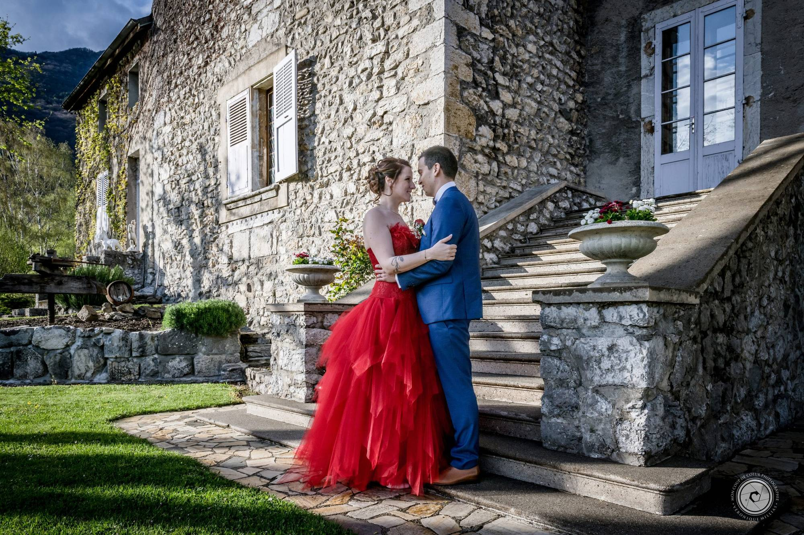
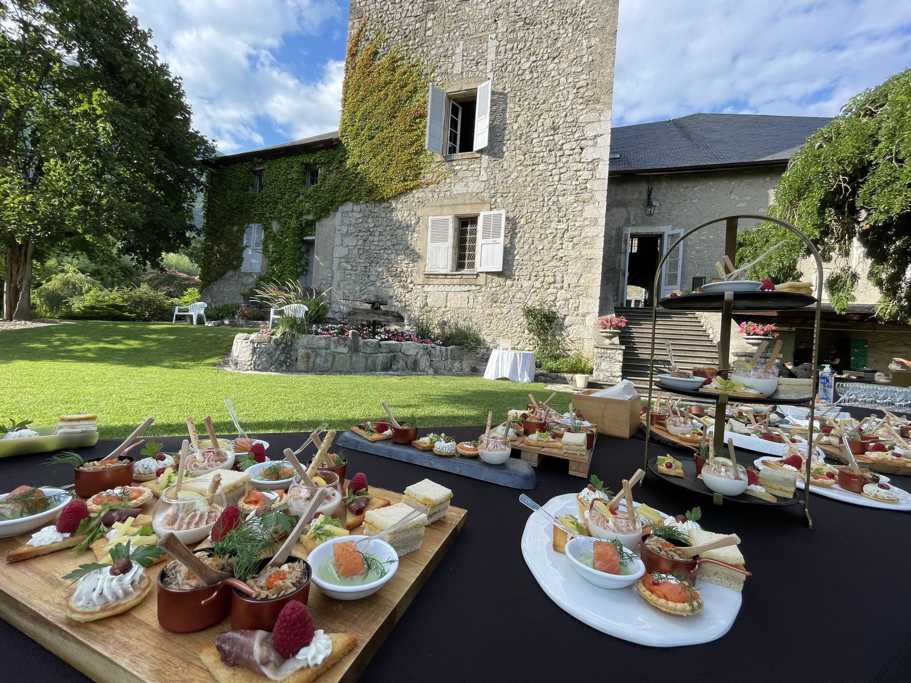
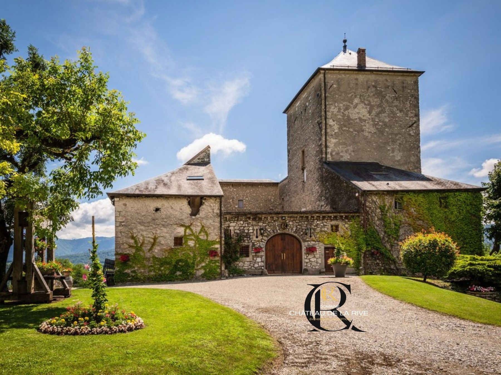
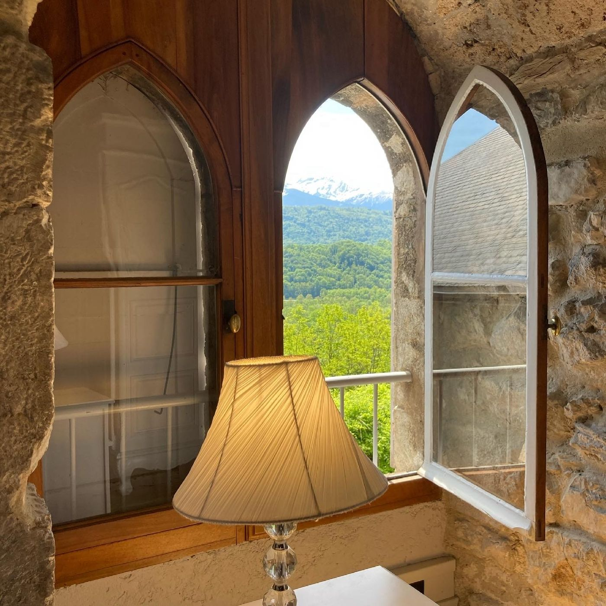
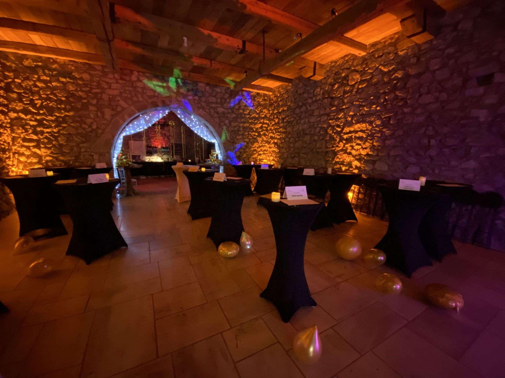
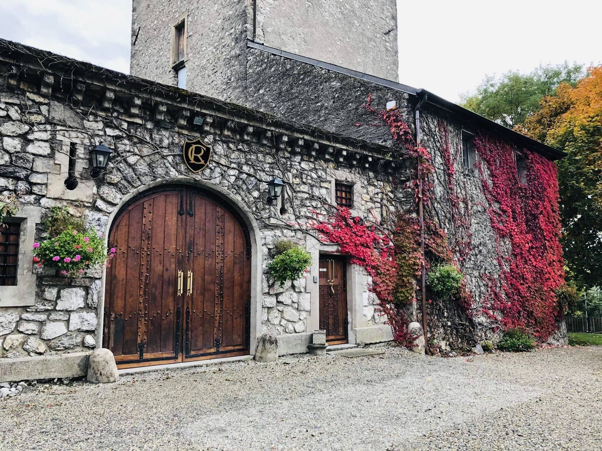
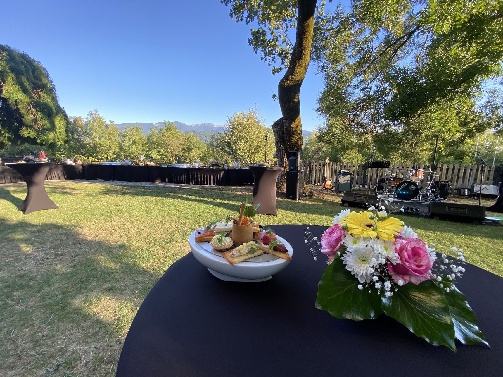
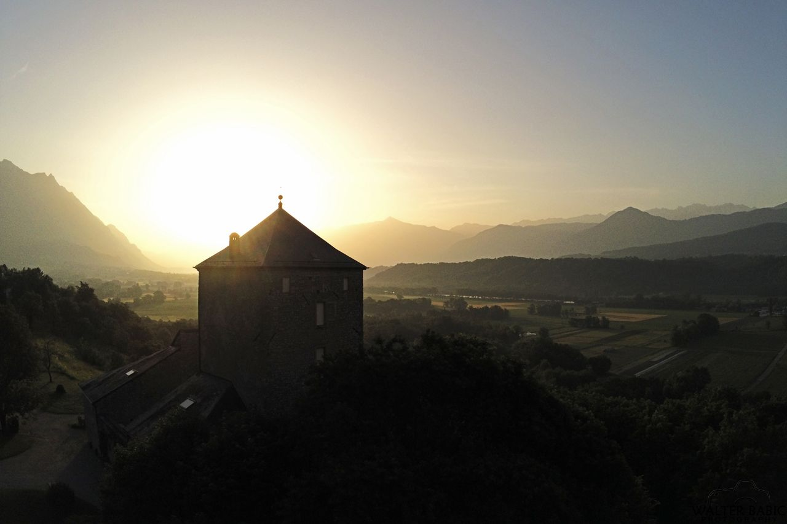
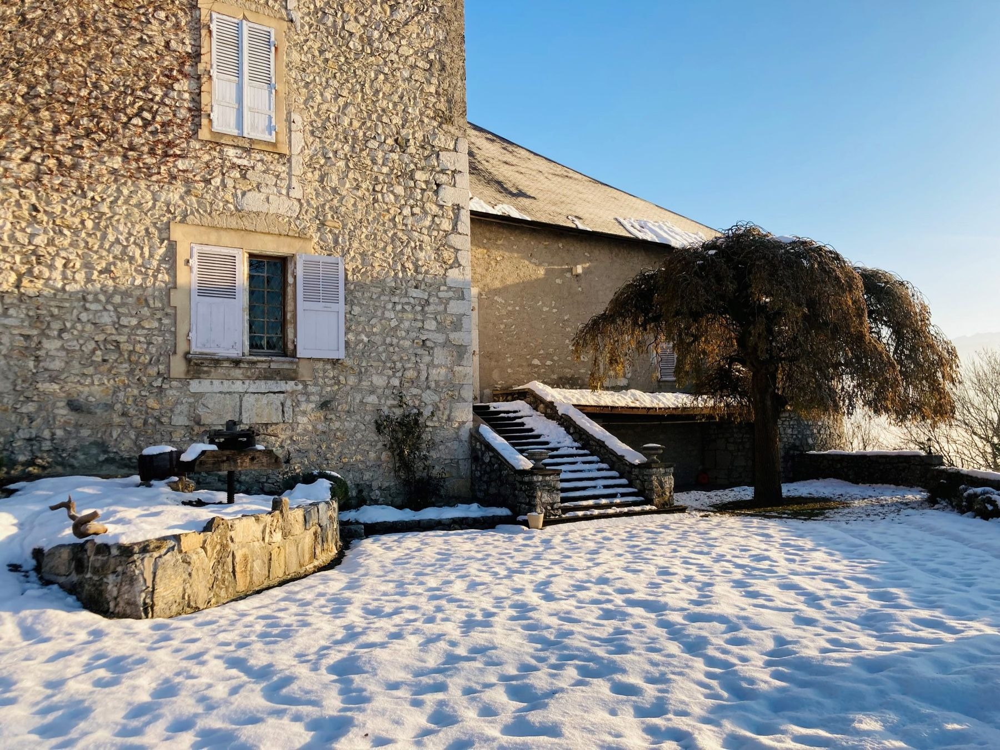

01Mariages
un écrin pour votre union
Votre union avec l’élu(e) de votre cœur mérite le meilleur.
Découvrir
02Entreprises
séminaires et team building
Séminaire, team building, soirée de lancement… : le Château de la Rive rassemble vos équipes dans un cadre propice à l’inspiration et à la créativité.
Découvrir 03
03
Événements
des souvenirs inoubliables
De la soirée thématique au départ à la retraite, le Château de la Rive se mobilise pour que votre événement privé soit synonyme de souvenirs inoubliables.
Découvrir

Le château
Un lieu chargé d’histoire
Entre vignes et montagnes face à la Combe de Savoie, le Château de la Rive vous dévoile son cadre d’exception.
- XIIIe siècleBâti par les Seigneurs de Verdon
- Les chevaliersPropriété de plusieurs chevaliers
- 1983Des fresques redécouvertes entre ses murs
- Aujourd’huiUn lieu de festivités depuis plus de 30 ans
Les salons du château
Quatre salles de réception modulables
Nous vous accueillons pour des festivités à la journée, à la nuitée ou au week-end en basse saison.








Le domaine en images
La cour et sa grande porte
L’avis des mariés
Ils s’y sont mariés
★★★★★Nous nous y sommes mariés. Le lieu est absolument magnifique ! L’équipe gérante attentive et conciliante. Nos invités ont tous été enchantés par l’ambiance du lieu calme, authentique et bien agencé. Le traiteur Aurelien Poncet a également ravi les convives par ses mets délicieux.
Laurie Cardinaux
★★★★★Nous venons de nous marier dans ce lieu de charme, un seul mot à dire : perfection ! Tous nos invités ont été unanimes, le lieu, le charme, les mets, le service des équipes d'Aurélien ont été largement au dessus de nos espérances. Nous ne pouvons que vous conseiller de le retenir pour le plus beau jour de votre vie ! Un grand merci à cette merveilleuse brigade.
Sophie Carera
★★★★★Nous nous sommes mariés le 2 Septembre au Domaine du Château de la Rive. Un grand merci à Aurélien Poncet et son équipe pour leur travail et professionnalisme irréprochable. Nous avons passé un week-end inoubliable et une journée de rêve. Le lieu est magnifique et le repas était exquis, encore, merci !
Julia Romano